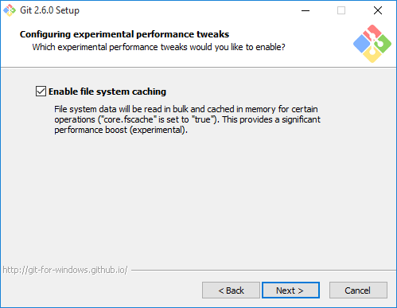

Practica 1
1. Darse de alta en la comunidad Google + ULL-ETSII-SYTW-1516
1. Solicitud de alta * Para hacerlo, entra a
una vez allí date de alta en g+ (si no lo has hecho) siguiendo el enlace en +me o +yo en la parte superior derecha
2. Instala node.JS
1. Instalación de Node.js * Si estás en Windows sigue las instrucciones en GitHub para Windows
2. Comprueba que npm funciona * Desde la consola comprobamos si la utilidad de la linea de comandos npm funciona.
3. Instala express * Para instalar express tenemos que tener el npm iniciado.
\$ mkdir myapp
\$ cd myapp
\$ npm init
\$ npm install express --save
3. Pon tu foto en tu perfil del campus virtual

4. Instala Git.
1. GitHub para Windows * Si estás en Windows sigue las instrucciones en GitHub para Windows
https://git-for-windows.github.io
* Descarga e instala el fichero : Git-2.6.0-64-bit.exe


 
5. Abre una cuenta en GitHub si no la tienes
Ya tenemos una cuenta publica abierta y esta en el siguiente enlace:
6. Si dispones de un Mac o Windows instala GitHub App
Desde el siguiente enlace se puede Descargar y instalar GitHub Para Windows Desktop.
7. Instala Atom, el editor desarrollado por GitHub
1. Descargar el instalador * Desde el siguiente enlace se puede Descargar y instalar atom Para Windows Desktop.

2. Prueba * Ya tenemos el atom instalado!
8. cloud9 c9.io
* Abre una cuenta en c9.io (cloud9). Vincula tu cuenta de GitHub con c9.
9. Instalar el traductor pandoc para traducir Markdown a HTML.
* Para instalar en Windows:
https://github.com/jgm/pandoc/releases/tag/1.15.0.6

* Pandoc Getting started.
http://pandoc.org/getting-started.html/